In this problem set, you will add blob detection to the grayscale image you generated last time to extract the touch point coordinates for each finger. After this, you will implement a gesture recognizer that can detect different finger gestures on your multi-touch pad and then execute the corresponding functionality.
In pset4, you created a grayscale image in which brighter pixels correspond to higher signal values. While you can now determine with your eyes where the multi-touch pad was touched, your program should also be able to do this automatically and tell you at which (x,y) coordinate it sees a touch point. To do this, we need to write code that detects the white 'blobs' in the image. This is called 'blob detection'.
Library for Blob Detection: Luckily, somebody else has already provided a library for blob detection and you can see the BlobDetection Reference here for details on the different functions. You already installed that library at the beginning of the last pset and we already imported it into the skeleton code using the following line:
import blobDetection.*;
Constructing BlobDetection Object: First, construct a new object of the BlobDetection class the large interpolated grayscale PImage height and width. You can find the BlobDetection Reference here.
Performing Blob Detection: Next, you can use the BlobDetection instance's computeBlobs() function to detect the blobs.
Retrieving Blob Number: Use the BlobDetection instance's getBlobNb() function to retrieve the number of blobs (i.e. fingers) in the image. If you get '0' for your blob number no matter how much you press on the multi-touch pad, read below in 'improving your results' in Section (2) on how to debug this.
(2) Drawing Blobs into the Image
Drawing Blob Centers and Contours Into the Image: Next, we want to extract for each blob: (1) the center of the blob (i.e., center of the touch point), and (2) the contour of blob (i.e., the outline of the touch point) and then draw the touch point center as a dot point, the touch point outline, and the touch point coordinates as (x,y) near the touch point center into our PImage. To retrieve the information from a specific blob, you can use the BlobDetection instance's getBlob() function, which returns a 'Blob' object and then use its instance functions to get its blob center and edges (refer to the 'Blob' class in the documentation here). Note that the contour is provided as a list of edges (i.e. lines).
Implement this in the drawBlobsAndEdges() function in the skeleton code:
Testing your Blob Detection: We recommend you test your blob detection with 1 finger, 2 fingers, and 3 fingers touching the multi-touch pad to see if it can reliably determine where the finger is touching. This will become important for the next part of this problem set in which we will build a gesture recognizer.
Improving your Results with a Custom Threshold: If your blob detection is not finding all the blobs in your image, consider the following: Before performing blob detection, the library automatically converts your image from a grayscale image into a black/white image. The reason the library does this is because blob detection groups pixels of similar color together to find 'blobs' and that is easier to do when pixels are either white or black and not something in between as would be the case for grayscale. The library automatically picks a 'threshold' value, for instance, it may decide to convert all pixels with a value below '100' to black (i.e. '0') and all pixels above to white (i.e. '255'). If you are not getting any blobs, it may mean that during thresholding all pixels were converted to black and no white pixels are left because the threshold value was set too high. To see if a lower threshold would leave you with more white pixels, you can use the setThreshold() function to determine which brightness levels from 0-255 should be taking into account when searching for blobs. Note that the threshold takes as input a float value from 0-1 so you need to scale your 0-255 values accordingly.
You can still use the pre-recorded multi-touch pad data from PSet 4 for testing the blob detection here, in case your multi-touch pad or other hardware does not work properly.
(3) Impelement Gesture Recognizer
Once you have the blob detection working, you can move on to build the gesture recognizer. The goal is to be able to draw with your finger onto your multi-touch pad and have the multi-touch pad recognize what was drawn. For instance, if you swipe from left to right, your code should recognize that you made this gesture and if you draw an 'A' your code should know that an 'A' was drawn.
$1 Unistroke Gesture Recognizer
Luckily, you don't have to implement the gesture recognizer from scratch. Instead, you can use the $1 Unistroke Recognizer, which is available as a Processing library. The $1 Unistroke Gesture Recognizer is part of the so-called $1 Gesture Recognizer family, i.e. a set of different gesture recognizers with different capabilities, such as single stroke gesture recognition, multi-stroke gesture recognition etc. In this Pset, we are going to use the $1 Unistroke Recognizer since it is the only one that is available for Processing as a library.
What Gestures can the $1 Unistroke Recognizer Detect?: The 'unistroke' means that the gesture recognizer can only recognize gestures that are made by one finger in one continous stroke. For instance, consider the 2 gestures shown below designed for the letter "A". The left one is written in one continous stroke and thus can be recognized by the $1 Unistroke recognizer. The right one, however, is written in two separate strokes and thus cannot be recognized. Similarly, you can recognize a single finger swipe left/right gesture, but you cannot recognize a zoom gesture with two fingers since that would require combining two separate strokes into one gesture. The $1 family has also has a multi-stroke recognizer but as mentioned previously it is not available as a library for Processing.
Stroke Orientation: The gesture recognizer ignores the stroke 'orientation'. Consider the example below, which shows the same gesture but executed in a different orientation on the multi-touch pad. The gesture recognizer automatically compensates for the change in orientation and will detect that both gestures are the same.
Stroke Direction: While the recognizer ignores stroke orientation, it recognizes stroke direction, i.e. the vector direction of the line along which your finger moves. For example, the two gestures shown below are visually identical on first sight but in the first gesture we start on the top left, while in the second gesture we start on the bottom left. Therefore, although visually the same gesture, the $1 recognizer is able to distinguish between them as two different gestures.
Try the Gesture Recognizer for yourself on the Demo Webpage: Before you move on, try out the interactive demo of the $1 Unistroke Recognizer that you can find here on this website. Scroll down to the 'Demo' section and you see 16 different gestures you can draw into the gray window on the right side. Draw each of the gestures once to get a feel for how different gestures are designed and how well they can be classified. After you drew a gesture, you will see its classified name at the top of the window. You can also make your own gesture by first drawing your custom gesture into the gray drawing window and then giving it a name in the 'Add as example of custom type:' field, then click 'Add'. If you now draw your custom gesture again, it should be correctly classified.
Implementing Gesture Recognition in Processing
Import $1 Unistroke Recognizer Library into Processing: Now that you know a bit more about what the $1 Unistroke recognizer can and cannot do, you can move on to use the recognizer to detect gestures on your multi-touch pad. Start by importing the '$1 Unistroke Recognizer' library by going to 'Sketch -> Import Library' and finding it through the search bar. Next, import the $1 Unistroke Recognizer library into your Pset Processing code.
import de.voidplus.dollar.*;
Instantiate new Gesture Recognizer: Construct a new object of the one dollar recognizer with:
OneDollar oneDollar = new OneDollar(this);
Turn on Console Plotting: Finally, turn on console plotting for the gesture recognizer using the line below. As soon as the gesture recognizer detects a gesture it will immediately print it on the console and also provide how similar it is to the closest match from the recorded template gestures (e.g. 84% similar).
Creating a new finger gesture: Next, you will create a new finger gesture. For starters, we will use a 'V' gesture, which is one of the most reliable ones that can be detected. Other reliable gestures are triangle, zigzag, checkmark, and anything that has some unique features. A circle, for instance, is one of the harder gestures to recognize due to its smooth outline that is easily susceptible to noise. To create a new finger gesture, you can use the following function:
Recording x/y coordinates for New Finger Gesture: While you could obtain the x-y-coordinates for your gesture template by tracking finger input from your multi-touch pad, we recommend not doing this and instead recommend that you draw the gesture with the mouse on screen and record the x-y coordinates from the mouseDragged() event. The reason for this is that the drawing with the mouse will give you very clear tracking points for creating your template gesture. Later on, when you draw the gesture with your multi-touch pad during actual use, this will be more fault resistant. In contrast, if you record your template gesture on the multi-touch pad, you will already have some noise in the data and it will be harder to match a gesture when there is additional noise during actual use later on. Below you see a recording of all the coordinates for our 'V' gesture that we then feed into the learn() function to add our new gesture.
Connect Finger Gesture to a Callback Function: Now that you have added your custom 'V' finger gesture to the gesture recognizer, you next have to define which function should be called when the gesture is being detected. Such a function is called a 'callback function' and it will be triggered every time the algorithm detects the corresponding finger gesture. You can bind the finger gesture to a callback function via the command below. Note that the call-back-function-name is only the same of the function without parenthesis and parameters.
Implement the Callback Function: Next, you need to implement the callback function. The callback function always has to be in the format as shown below, i.e. contain the same number of parameters and parameter types and return void. The function name and parameter names, however, are up to you. If upon recognizing the gesture, you just want to execute some action, you can simply add that code into the function body. If you want to build a location dependent gesture, you could also check where on the multi-touch pad the gesture started or ended etc.
void foo(String gesture-name, float percentOfSimilarity, int startX, int startY, int centroidX, int centroidY, int endX, int endY){
// do something when the gesture is detected
}
Tracking the finger gestures: Now that you have defined how your gesture looks like and what function should be called when it is detected, you still have to tell your code when it should start looking for the gesture. We want to start tracking gestures when our code detects a 'finger blob'.
Therefore, you need to add the tracking function below in the blob detection method where it determines if a finger was successfully detected. The x/y coordinate in the function are the x/y coordinate of your touch point.
oneDollar.track(int x-coordinate, int y-coordinate);
Note that you don't have to 'stop' tracking. The track() function will only be executed when Processing goes through its loop and detects a finger blob, i.e. knows a finger is present. If no finger has been present for a while, i.e. no new data is fed to the gesture recognizer, the recognizer will automatically determine that the gesture has ended and will provide its best guess at what gesture was executed.
Visualize Gesture Detection Result: Finally, once your gesture is detected, your callback function should visualize the detected gesture. You can do this by writing the name of the detected gesture into the Processing UI window as shown in the top left corner of the images below.
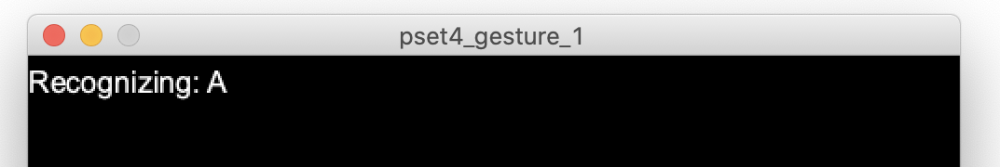
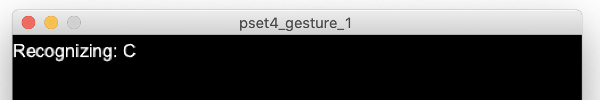
(4) Design Customized Finger Gestures
Now that you have mastered the gesture recognizer, let's go ahead and implement 3 different finger gestures that can be recognized by your multi-touch pad!
For example, you can implement finger input for recognizing letters (A, C etc.), 2D shapes (triangle, circle etc.), and symbols (check mark etc.). Note that in good gesture design, the gesture should be related to what function is being called. For instance, you cannot draw a 'star' and associate it with a 'smile'. Instead, it would be better to draw a 'half circle', which more closely resembles a 'smile'. Similarly, gestures cannot be too abstract. For instance, you cannot have your finger draw one straight line on the multi-touch pad and the system recognizes it as 'fish'. Instead, there are better one-stroke gestures that could represent a fish outline.
To further display the gestures you customized, we ask you to draw out touch points (i.e. center of the blob detected) that's been recognized by your multi-touch pad. For this parts, you should still keep the drawing from blob detection in Section (2), and keep the center points (not the blob contour) on the UI for a while (e.g. 2 seconds) even after you lift your finger from multi-touch pad. So that we can see the input gesture patterns recorded from your multi-touch pad. You can implement this by storing the touch points in a separate array, always draw the array points when it's not empty, and clear the points in array whenever it exceeds the 2 seconds time (recall the millis() and System.nanoTime() functions from PSet 4). The image down below shows an example of the UI when the "Z" gesture is recognized.
(3) Rotoscope
Finally, as the last part of this problem set, you will create presentation materials that you can use for your website or other project portfolio to showcase your work.
Create a rotoscope of your multi-touch pad. You can find information on how to do this here. Below are some examples from last year.
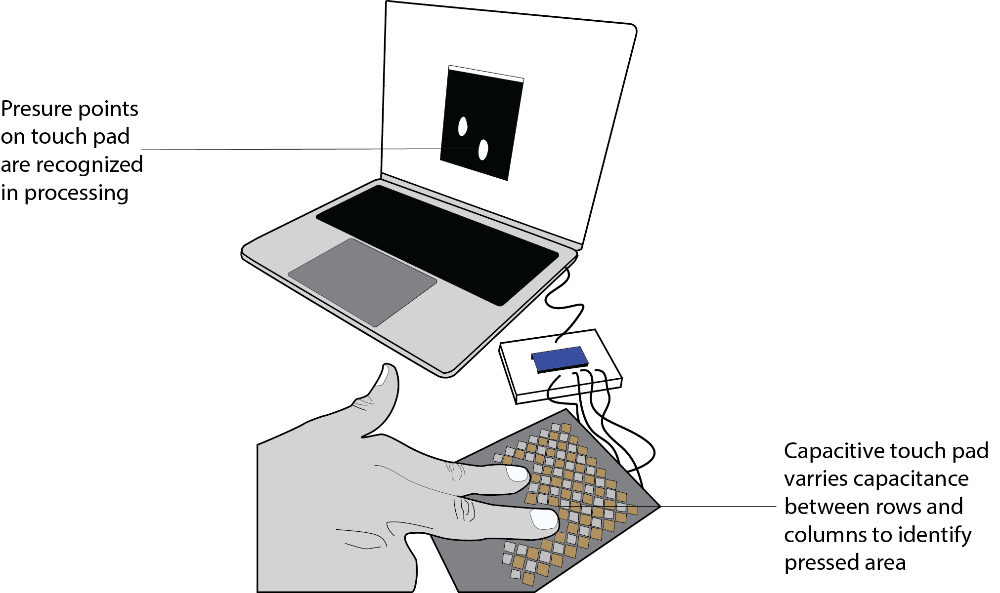
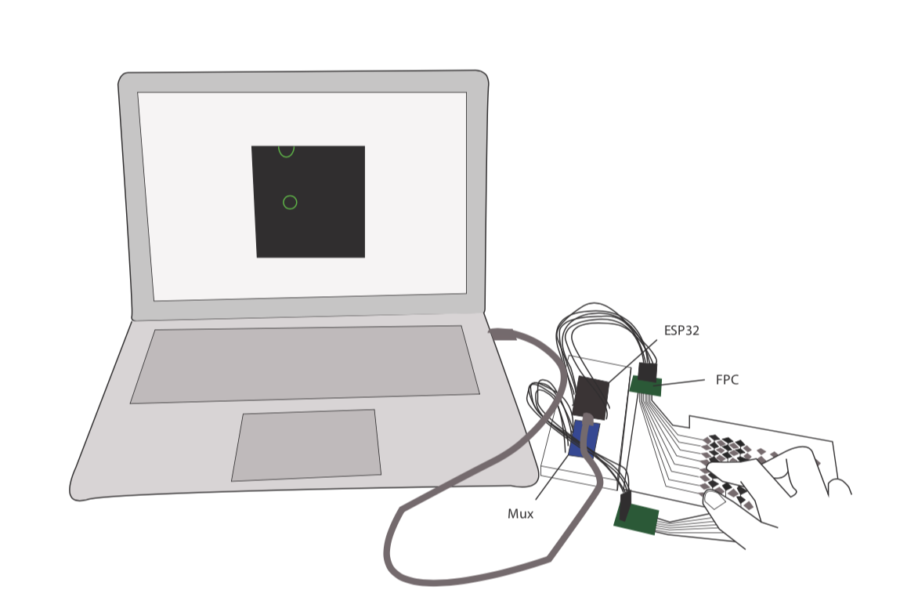
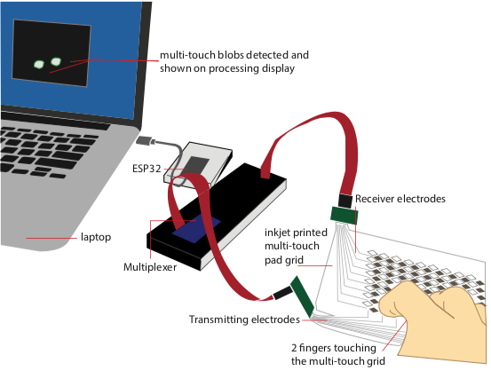
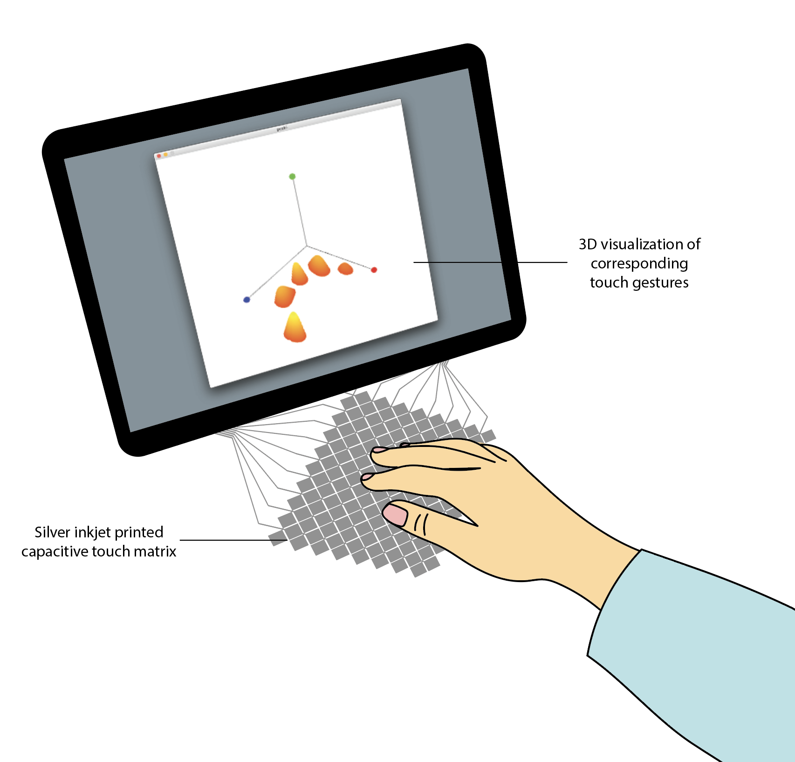
(4) Photos
Take some photos using a clean backdrop. You can find information on how to do this here. Below are some examples from last year. Note that last year we also implemented a 3D visualization that you can see in some of the photos below. We took it out this year since you already have enough to do.
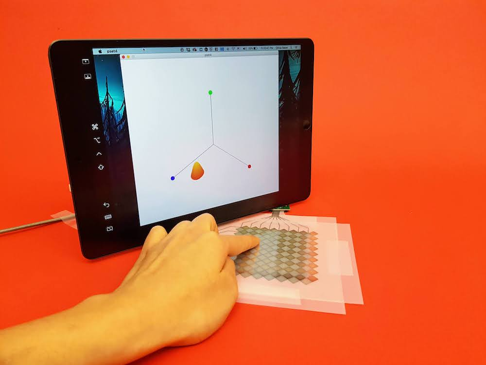
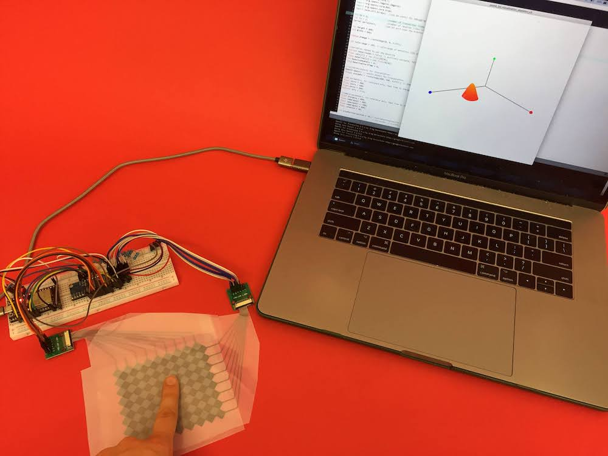
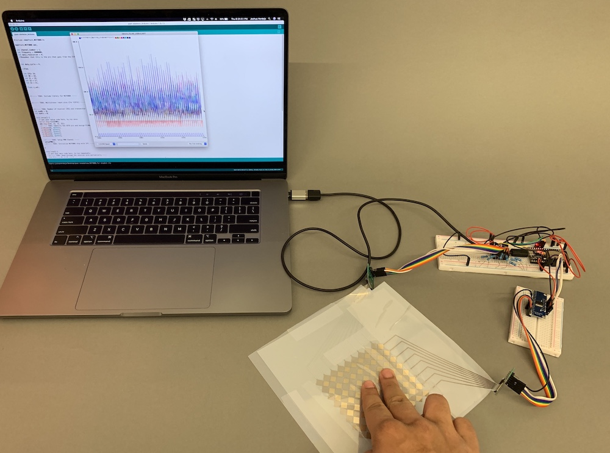
(5) Video (optional)
The video is optional but may be a nice addition to your project portfolio. You can find information on how to do this here. Below are some examples from last year.
Upload your Processing Code and Video of Gestures
For grading, please upload the following to your google drive student folder:
Gesture Recognizer
a drawing on paper that shows your 3 custom finger gestures so we know which gestures you implemented, use the same notation as in the pset to indicate the start point for executing the gesture
the .pde file of your Processing program
3 photos showing your Processing UI successfully recognizing the 3 different finger gestures
a short video showing your Processing UI successfully recognizing the 3 different finger gestures (take the video so that the multi-touch pad and Processing Window are seen at the same time)
Grading
We will give 20 pts in total:
5 pts: you implemented the blob detection correctly
5 pts: you drew the touch center, outline, and coordinate into the visualization correctly, and showed that your touch pad can recognize 1, 2, and 3 fingers touching correctly.
5pts: you implemented 3 different gestures using the learn(), bind(), and track() functions from the $1 Unistroke Recognizer
5pts: you submitted a drawing showing all three gestures you implemented and show in the video that all three gestures are correctly recognized


 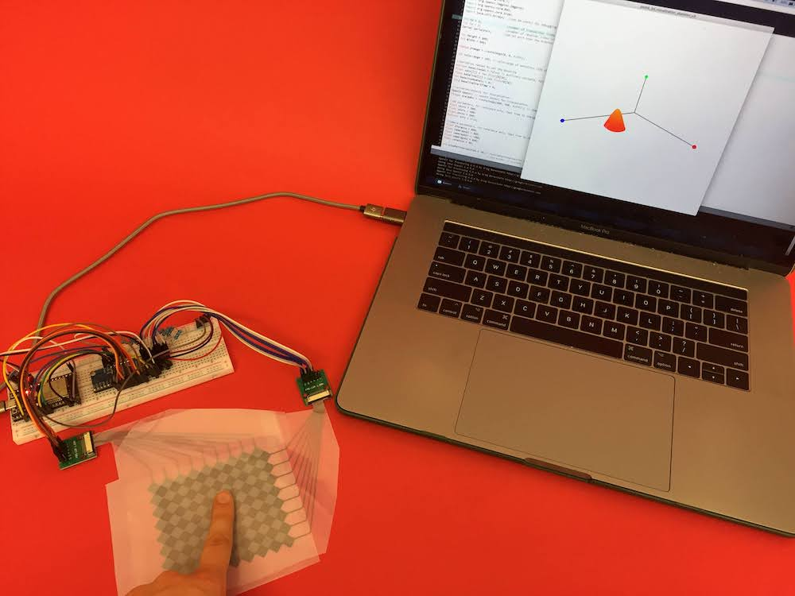
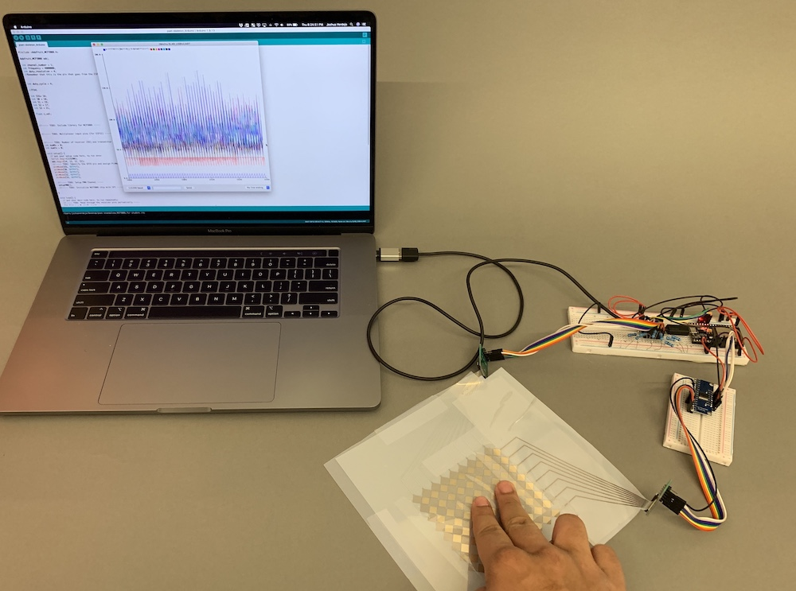
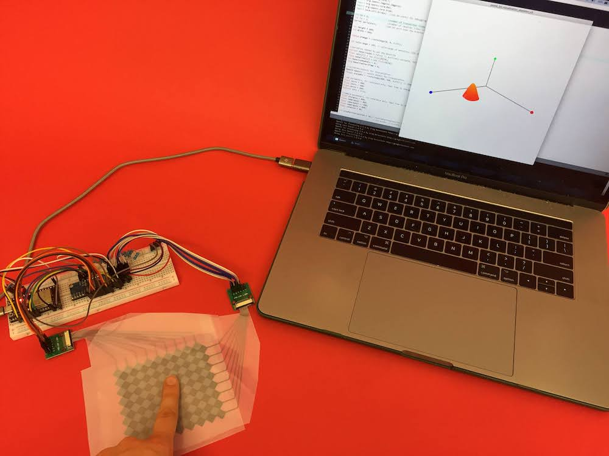
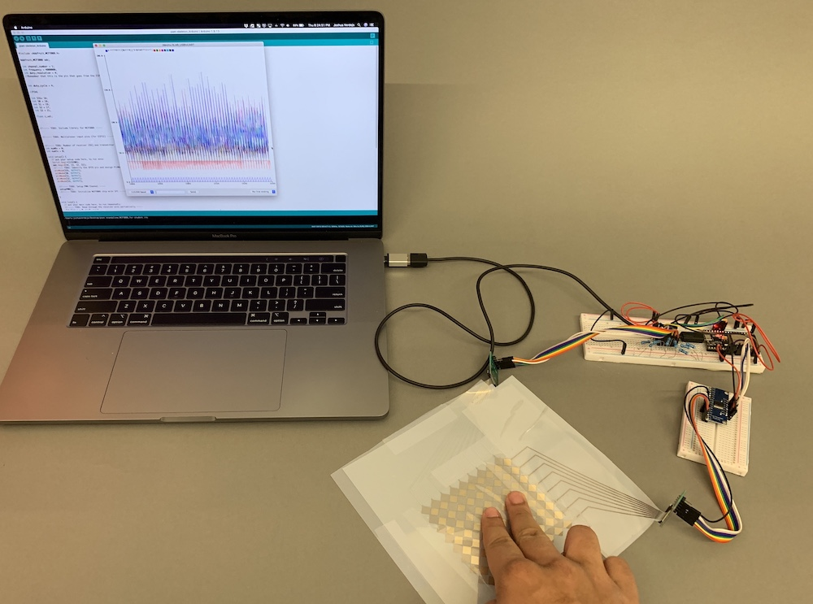